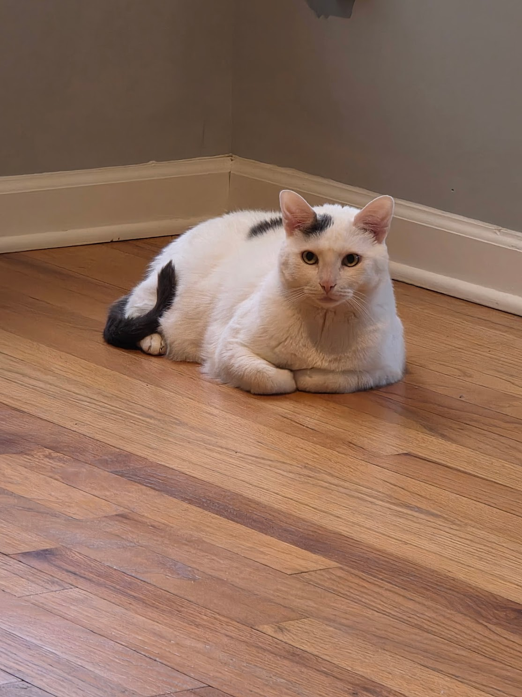
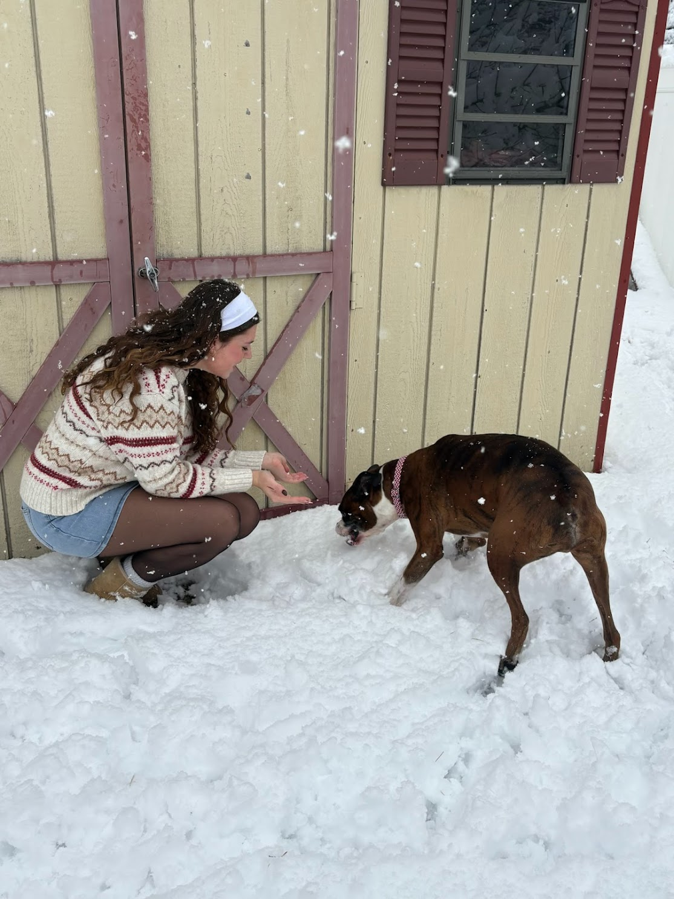
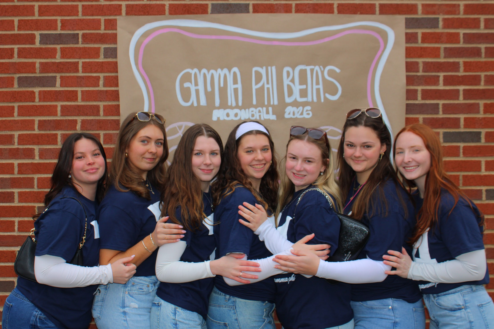

Hi! I'm Amanda Ernst, a student at Quinnipiac University. My home town is Bayville, New Jersey where I have lived my entire life. I have a passion for dance, my family, friends, pets, my soroity, food, and traveling. I love to share my knowledge and experiences with others. I am a current Eboard member of the Quinnipiac Dance Collective as the Communitiy Outreach Chair. I also hold two chair positions in my soroity Gamma Phi Beta as the feidility and lipsync chairwomen. I have a younger brother who is 15 who lives at home with my mom and dad. We have a boxer named Milo and a cat named Mavis. In high school I competed in dance for 12 years and now am apart of a smaller scale club here at Quinnipiac.
In my free time, I enjoy dancing, going to the beach, and exploring new places. I believe in continuous learning and am always looking for new opportunities to grow both personally and professionally.
Feel free to reach out to me if you want to connect or collaborate on a project. I'm always open to new ideas and partnerships!
Contacts: ernstamanda05@gmail.com


